september 2005
RPD I2C Memory
Module for 2* I2C memory modules. Designed for 3Volt, 8k*8 memory, but devices with the same pin-out should also fit.
Because it's an I2C device, the connectors are brought fully to the other side, so the I2C-devices are stackable. If devices are stacked, the SDA and SCLK lines should be pulled up at only 1 device, jumpers mounted. The address lines A2 and A1 can be set through jumpers (mounted is "1").
Although the PIC is supplied by 5V, there's no problem at all, to connect 3V devices directly to the PIC, because all outputs are open-collector devices. For 3V devices the CKE-bit (SSPSTAT<6>) should be set to 1, to enable SMbus specs (minimum high level input D044A = 1.4Volt), instead of I2C specs (minimal high level D044 = 0.7Vdd = 3.5 Volt).
Settings of SMP bit (SSPSTAT<7>) are of minor importance (I think). Some discussion and tests at 400kHz and 1MHz are shown below.
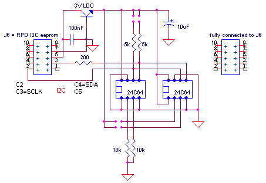
The dataline is extra protected with a 200 Ohm resistor. Because we assume the PIC is always master, it's necessary to protect the clock line with a series resistor.
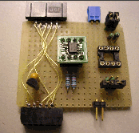 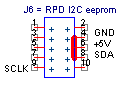
JALcc macro call
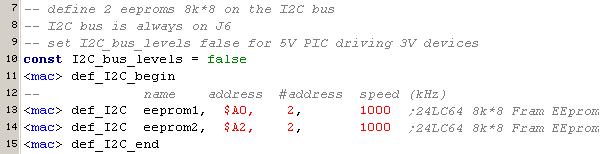
JALcc use
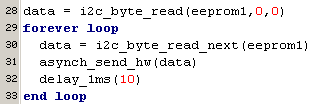
For the moment, the next routines are implemented:

JALcc macro expansion
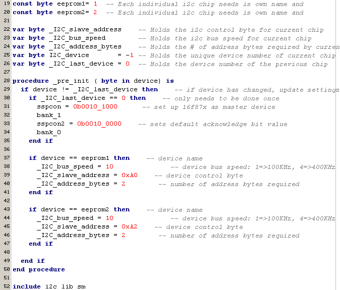
BackGround Information
A good JAL explanation of I2C bus, including interrupts is given by Bert van Dam, see I2C databus
Because Microchip is not very clear about bits 6,7 of SSPSTAT, I've done some measurements, shown below.
What you see are scope recordings of SDC (top-line) and SDA (bottom line), for the I2C startsequence plus the first slave address bits. These measurements should have been made with the FM24LC64 (specs upto 1 MHz), but by a fault where done with M24C64WMN6 (specs upto 400 kHz).
My raw conclusions are
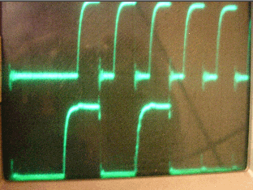 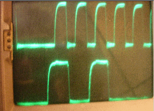
400 kHz, Slewrate disabled, I2C specs = 0b_00... 400 kHz, Slewrate enabled, I2C specs = 0b_10...
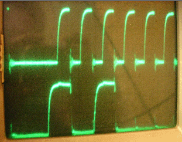 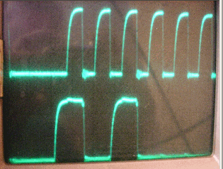
400 kHz, Slewrate disabled, SMBus specs = 0b_01... 400 kHz, Slewrate enabled, SMBus specs = 0b_11...
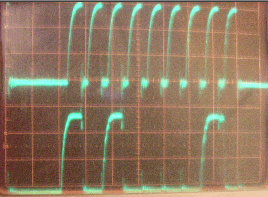 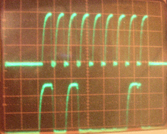
1MHz, Slewrate disabled, I2C specs = 0b_00... 1MHz, Slewrate enabled, I2C specs = 0b_10...
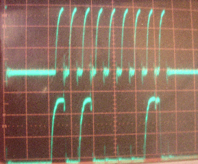 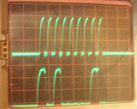
1MHz, Slewrate disabled, SMBus specs = 0b_01... 1MHz, Slewrate enabled, SMBus specs = 0b_11...